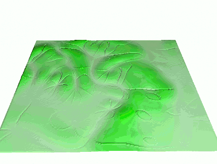
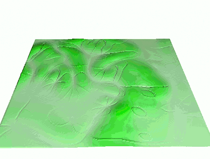
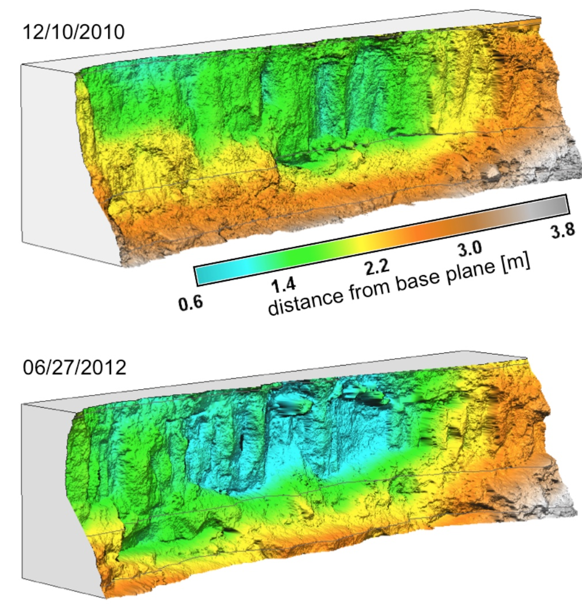
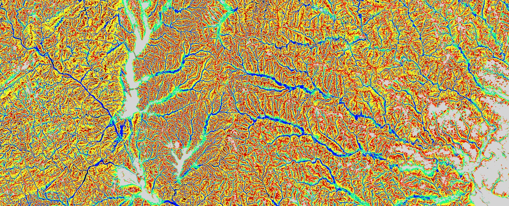
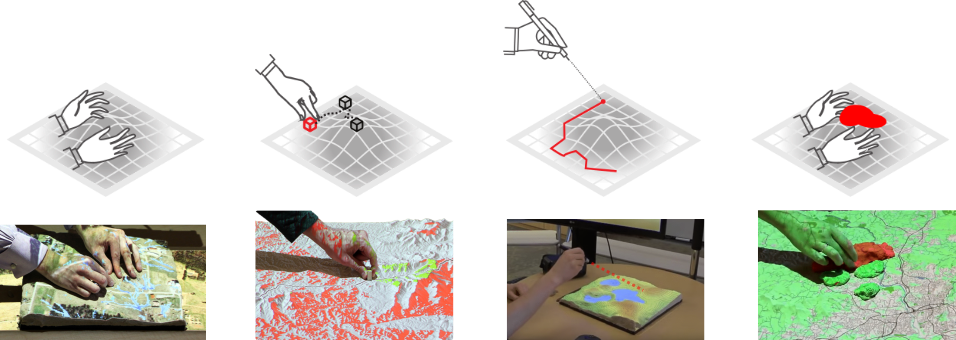
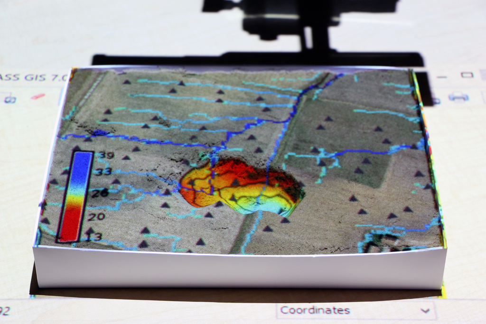
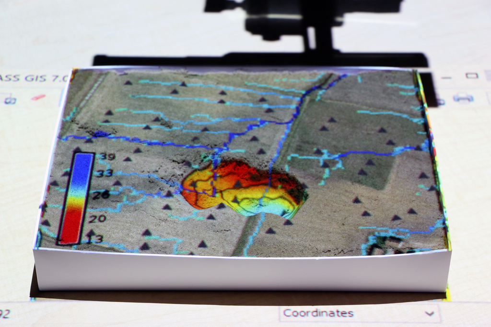
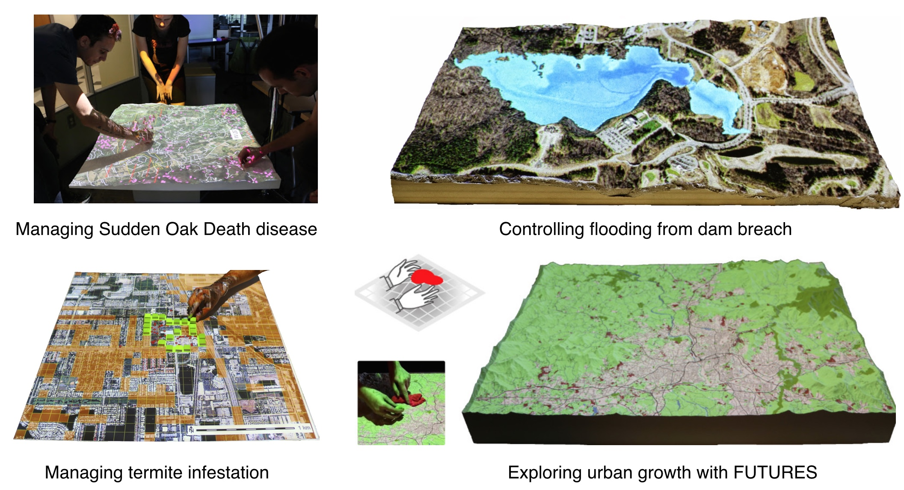

GRASS GIS as an open source innovation platform:
from dynamic visualizations to collaborative tangible modeling
Helena Mitasova, Anna Petrasova, Vaclav Petras, and Brendan Harmon
NCSU
GeoForAll Lab
at
Center for Geospatial Analytics
September 14-16, 2016
Maps go digital with GRASS
Year 1987: Let William Shatner do the introduction
GRASS GIS for geospatial research
grass.osgeo.org
- general purpose GIS with wxPython GUI and CLI
- backend processing for QGIS, R statistics, WebGIS
- powerful 2D/3D raster, imagery and vector processing
- single integrated software with 30 years of development
GRASS GIS and innovation

- GRASS has long history - known as a reliable geospatial number cruncher (Neteler 2014)
- Developed as component of research projects - innovation through research
- Many historically innovative tools serve today: our examples are just a small subset
Watersheds and stream extraction
- First worldwide map of watersheds derived from a global DEM
- Unique least cost path algorithm, no depression filling needed:
r.watershed
- Updated for massive data sets (SRTM, lidar DEMs)
Ehlschlaeger C., 1989, Using the AT Search Algorithm to Develop Hydrologic Models from Digital Elevation Data,
Proc IGIS Symposium '89, 275-281.
Metz M., Mitasova H., and Harmon R.S., 2011, Efficient extraction of drainage networks from massive, radar-based elevation models with least cost path search, Hydrology and Earth System Sciences, 15, 667-678
Multivariate splines
2D, 3D and 4D interpolation with tuneable tension

Mitasova, H., L. Mitas, 1993, Interpolation by regularized spline with tension: I. Theory and implementation. Mathematical Geology 25, 641-655.
Splines with geometry analysis
- simultaneous topo analysis: gradients, curvatures
- tuneable level of detail, geometry preserving smoothing

Mitasova, H., Mitas, L., Harmon, R.S., 2005, Simultaneous spline interpolation and topographic analysis for lidar elevation data: methods for Open source GIS, IEEE GRSL 2(4), 375-379.
Dynamic volume modeling
Groundwater pollution plume interpolated from 10 years of well monitoring data using 4D spline function

WM Brown, M Astley, T Baker, H Mitasova, 1995, GRASS as an integrated GIS and visualization system for spatio-temporal modeling AUTOCARTO, 89-99
Dynamic water and sediment flow
Flow accumulation and sediment transport capacity visualized as dynamic surfaces
 

Mitasova, H., L. Mitas, B.M. Brown, D.P. Gerdes, I. Kosinovsky, 1995, Modeling spatially and temporally distributed phenomena: New methods and tools for GRASS GIS. IJGIS, 9 (4), 443-446.
Duality of particles and fields
Path sampling method for flow continuity equations


Mitas, L., Mitasova, H., 1998, Distributed erosion modeling for effective erosion prevention. Water Resources Research 34(3), pp. 505-516
GRASS 7 innovations
Space-Time Framework
- Space-time 2D, 3D raster and vector datatypes
- Time series datasets managed in temporal database
- New modules: query, aggregation, conversion, statistics, gap filling
- Temporal algebra: temporal relations, temporal buffer, spatio-temporal operators
Gebbert, S., Pebesma, E., 2014. TGRASS: A temporal GIS for field based environmental modeling. Environmental Modelling & Software 53, 1-12.
MODIS land surface temperature
- 14 years of 4/day (20K) maps, entire Europe, 250m res
- advanced statistics to fill no-data and enhance resolution, multivariate regression includes elevation, solar angle, precipitation


EuroLST: http://gis.cri.fmach.it/eurolst/, Metz, Rocchini, Neteler, 2014: Rem Sens, 6(5): 3822-3840
DEM time series visualization
Jockey's Ridge migration 1974 - 2014, lidar time series


Hardin, E., Mitasova, H., Tateosian, L., Overton, M., 2014, GIS-based Analysis of Coastal Lidar Time-Series, Springer Briefs in Computer Science, Springer, New York, 84 p.
Space-Time Cube visualization
Jockey's Ridge 16m, 20m contour evolution isosurfaces


Space time cube for TLS series
Stream bank erosion from terrestrial lidar


Starek, M.J., Mitasova H., Wegmann, K, Lyons, N., 2013, Space-Time Cube Representation of Stream Bank Evolution Mapped by Terrestrial Laser Scanning, IEEE GRSL 10(6), p. 1369-1373
Mapping with sUAS
Trimble UX5 UAS flight plan analysis

Surface water flow modeling
- SfM in Agisoft or OpenDroneMap > point cloud
- DSM interpolation and path sampling-based surface runoff modeling in GRASS GIS


Jeziorska, J; Mitasova, H; Petrasova, A; Petras, V; Divakaran, D; Zajkowski, T., 2016, Overland flow analysis using time series of sUAS-derived elevation models, ISPRS Annals of the Photogrammetry, Remote Sensing and Spatial Information Sciences, Vol III-8, pp.159-166
Geomorphons
- Basic landforms extracted for the entire US
- Interactive search of similar landuse patterns
- On-line geospatial analytics: http://sil.uc.edu/
- Spatial Informatics Laboratory, University of Cincinnati

Tangible Landscape
Tangible user interface for GRASS GIS

Book: Petrasova, A., Harmon, B., Petras, V., Mitasova, H., 2015, Tangible Modeling with Open Source GIS, Springer International Publishing, 135 p.
Why tangible interfaces for GIS?
- Interaction through mouse and display can be tedious
- Manipulating 3D computer models requires specialized software and training, restricts creativity
- Collaboration is limited as typically only one user at a time can navigate and modify models.


How does it work?

Tangible Landscape couples a digital and a physical model through a continuous cycle of 3D scanning, geospatial modeling, and projection
Software

User Interfaces
Tangible Graphical Command Line
Interactions
| surface | points | lines | areas |
3D soil moisture exploration
 



Wildfire spread
Coupling with contributed modules
TL coupled with models in GRASS GIS addons, R
Tangible Landscape + Immersive Virtual Reality
Resources for innovators
Workshops
GRASS GIS as platform for sustainable Open Science
- Reproducibility: open source is the natural habitat for science and research
- Return of Investment: many tools available since 80s, continuously developed
- Auto-documentation: map and command history preserved “forever”
- Reliability: testing and quality control system (in progress) integrated into the software itself
- Longevity for Open Science: code integrated into GRASS “survives” even if original authors would not continue
NCSU Geoforall lab
geospatial.ncsu.edu/osgeorel/
- NCSU Center for Geospatial Analytics, PhD program in Geospatial Analytics coming in fall 2017
- Member of GeoForAll initiative and NA leading lab
- GRASS GIS development, 3 members of GRASS PSC
- Research: geocomputation and geovisualization
- Courses on-campus and on-line with open source geospatial component
Integrating Free and Open Source Solutions into Geospatial Science Education. Petras, V., Petrasova, A., Harmon, B., Meentemeyer, R.K., Mitasova, H. ISPRS IJGI. 2015.
Geoforall initiative
http://www.geoforall.org/
Started in 2012

Geoforall initiative
http://www.geoforall.org/
network in 2016: we need better map!

Thank You!
Tangible Landscape: tangible-landscape.github.io